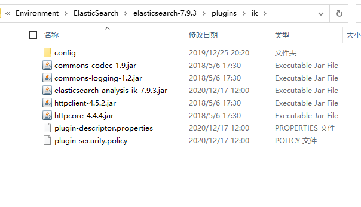

ElasticSearch
搜索
lucene是一套信息检索工具包！jar包！不包含搜索引擎系统！
包含：索引结构！读写索引的工具！排序，搜索规则….工具类！
Lucene和ElasticSearch关系：
ElasticSearch是基于Lucene做了封装和增强
ElasticSearch简介
Elasticsearch是一个基于Lucene的搜索服务器。它提供了一个分布式多用户能力的全文搜索引擎，基于RESTful web接口。Elasticsearch是用Java语言开发的，并作为Apache许可条款下的开放源码发布，是一种流行的企业级搜索引擎。
Elasticsearch 是一个分布式、高扩展、高实时的搜索与数据分析引擎。它能很方便的使大量数据具有搜索、分析和探索的能力。充分利用Elasticsearch的水平伸缩性，能使数据在生产环境变得更有价值。Elasticsearch 的实现原理主要分为以下几个步骤，首先用户将数据提交到Elasticsearch 数据库中，再通过分词控制器去将对应的语句分词，将其权重和分词结果一并存入数据，当用户搜索数据时候，再根据权重将结果排名，打分，再将返回结果呈现给用户。
谁在用？
百度，搜索引擎，电商网站，gitbub，stackoverflow等等
Solr简介
也是基于Lucene就行封装的。
ElasticSearch和Solr的比较
ElasticSearch vs Solr 总结
1、es基本是开箱即用，非常简单。Solr安装略微复杂。
2、Solr利用Zookeeper进行分布式管理，而ElasticSearch自身带有分布式协调管理功能
3、Solr支持更多格式的数据，比如JSON、XML、CSV，而ElasticSearch仅支持json文件格式
4、Solr支持官方提供的功能更多，而ElasticSearch本身更注重于核心功能，高级功能多有第三方插件提供，例如图形化界面需要Kibana友好支撑。
5、Solr查询快，但更新索引时慢（即插入删除慢），用于电商等查询多应用
- ES建立索引快，即实时性查询快，用于Facebook新浪等搜索。
- Solr是传统搜索应用的有力解决方案，但是ElasticSearch更适用于新兴的实时搜索应用。
6、Solr比较成熟，有一个更大，更成熟的用户、开发和贡献者社区，而相对ElasticSearch相对开发维护者较少，更新太快，学习使用成本较高。
ElasticSearch安装
声明：jdk1.8，最低要求！ElasticSearch客户端，界面工具！
java开发，ElasticSearch的版本和我们之后对应的java的核心jar包版本对应！！！jkd环境正常
下载
地址：https://www.elastic.co/cn/elasticsearch/
ElasticSearch: https://mirrors.huaweicloud.com/elasticsearch/?C=N&O=D logstash: https://mirrors.huaweicloud.com/logstash/?C=N&O=D kibana:https://www.elastic.co/cn/downloads/kibana
安装
1、解压
2、熟悉目录
bin 启动目录
config 配置文件
log4j2 日志配置文件
jvm.options java 虚拟机相关的配置
elasticsearch.yml elasticsearch的配置文件！
lib 相关jar包
logs 日志!
modules 功能模块
plugins 插件！ik分词器
3、启动，访问9200
4、访问测试

安装可视化界面es head的插件！
需要node.js环境和前端基础
1、下载地址：https://github.com/mobz/elasticsearch-head
2、启动
npm install
npm run start
3、连接测试发现，存在跨域问题：配置elasticsearch.yml文件允许跨域
http.cors.enabled:true
http.cors.allow-origin:"*"
4、重启es服务，再次连接
把索引当做一个数据库！(可以建立索引（库) ，文档（库中的数据！））
这个head当做数据展示工具！后面所有的查询通过Kibana第三方工具
了解ELK

安装Kibana
Kibana是一个针对ElasticSearch的开源分析及可视化平台，用来搜索、查看交互存储在ElasticSearch索引中的数据。使用Kibana，可以通过各种图表进行高级数据分析及展示。Kibana让海量数据更容易理解。它操作简单，基于浏览器的用户界面可以快速创建仪表板（dashboard）实时显示ElasticSearch查询动态。设置Kibana非常简单。无需编码或者额外的基础架构，几分钟内就可以完成Kibana安装并启动ElasticSearch索引监测。
官网：https://www.elasitc.co/cn/kibana
Kibana版本要和ES一致！！！！
下载完后，解压也需要一定时间！是一个标准工程1
好处：ELK基本上都是拆箱即用！
启动测试：
1、解压后目录
2、启动
3、访问测试
4、开发工具（Postman、curl、head、谷歌浏览器插件测试！）
之后的所有操作都是在这里进行编写！
5、汉化！修改Kibana.yml文件配置即可！zh-CN，重启！
ES核心概念
1、索引
2、字段类型（maping）
3、文档（documents）
概述
es是如何去存储数据，数据结构是什么，又是如何实现搜索的呢？
集群，节点，索引，类型，文档，分片，映射是什么？
elasticsearch是面向文档的，关系型数据库和ElasticSearch客观对比！一切都是json！
ElasticSearch（集群）中可以包含多个索引（数据库），每个索引中可以包含多个类型（表），每个类型下又包含多个文档（行），每个文档中又包含多个字段（列）。
物理设计：
ElasticSearch在后台把每一个索引划分成多分片，每份分片可以在集群中的不同服务器间迁移
一个人就是一个集群！默认的集群名字就是elasticsearch
逻辑设计：
一个索引类型中，包含多个文档，比如说文档1，文档2。当我们索引一篇文档时，可以通过这样的一些信息找到它：索引->类型->文档ID，通过这个组合我们就能索引到某个具体的文档。注意：ID不必是整数，实际上它是个字符串。
文档
就是一条条数据
user
1 zhangsan 3
2 cby 4
ElasticSearch是面向文档的，那么就意味着索引和搜索数据的最小单位是文档，ElasticSearch中，文档有几个重要的属性：
- 自我包含，一篇文档同时包含字段和对应的值，也就是同时包含key：value！
- 可以是层次型的，一个文档中包含子文档，复杂的逻辑实体就是这么来的！（就是一个json对象！fastjson进行自动转换！）
- 灵活的结构，文档不依赖预先定义的模式，我们知道关系型数据库中，要提前定义字段才能使用，在ElasticSearch中，对于字段的非常灵活的，有时候，我们可以忽略该字段，或者动态的添加一个新的字段。
尽管我们可以随意地新增或忽略该字段，但是，每个字段的类型非常重要，比如一个年龄字段类型，可以是字符串也可以是整型。因为ElasticSearch会保存字段和类型之间的映射及其他的设置。这种映射具体到每一个映射的每种类型，这也是为什么ElasticSearch中，类型有时候也称为映射类型。
类型
类型是文档的逻辑容器，就像关系型数据库一样，表格是行的容器。类型中对于字段的定义称为映射，比如name 映射为字符串类型。我们说文档是无模式的，它们不需要拥有映射中所定义的所有字段，比如新增一个字段，那么ElasticSearch是这么做的呢？ElasticSearch会自动地将新字段加入映射，但是这个字段不确实它是什么类型，ElasticSearch就开始猜，如果这个值是18，那么ElasticSearch会认为它是整型。但是ElasticSearch也可能猜不对，所以最安全的方式就是提前定义好所需要的的映射，这点跟关系型数据库殊途同归了，先定义好字段，然后再使用。
索引
就是数据库！
索引是映射类型的容器，ElasticSearch中的索引是一个非常大的文档集合。索引存储了映射类型的字段和其他设置。然后它们被存储到了各个分片上了。
物理设计：节点和分片如何工作
一个集群至少有一个节点，而一个节点就是一个ElasticSearch进程，节点可以有多个索引，如果你要创建索引，那么索引将会有5个分片（primary shard,又称主分片）构成的，每个主分片会有一个副本（replica shard，又称复制分片）
上图是三个节点的集群，可以看到主分片和对应的复制分片都不会在同一个节点内，这样有利于某个节点挂掉了，数据也不至于丢失。实际上，一个分片是一个Lucene索引，一个包含倒排索引的文件目录，倒排索引的结构使得ElasticSearch在不扫描全部文档的情况下，就能告诉你哪些文件包含特定的关键字。不过，倒排索引是什么？
倒排索引
ElasticSearch使用一种称为倒排索引的结构，采用Lucene倒排索引作为底层。这种结构适用于快速的全文搜索，一个索引由文档中所有不重复的列表构成，对于每一个词，都有一个包含它的文档列表。例如现有两个文档，每个文档包含如下内容：
IK分词器插件
什么是IK分词器？
分词：即把一段中文或者别的划分成一个个的关键字，我们在搜索时候会把自己的信息进行分词，会把数据库中或者索引库中的数据进行分词，然后进行一个匹配操作，默认的中文分词是将一个字看成一个词，比如 ”我是小白“会被分成”我“，”是“，”小“， ”白“，这显然不符合要求，所以我们需要安装中文分词器IK来解决问题。
IK提供了两个分词算法：ik_smart和ik_max_word，其中ik_smart为最少切分，ik_max_word为最细粒度划分！
安装
1、地址：https://github.com/medcl/elasticsearch-analysis-ik/
2、下载完毕后，放入ElasticSearch插件中即可！注意版本对应！！！

3、重启观察es，可以看到ik分词器被加载了！
4、使用Kibana测试！
查看不同分词效果
ik_smart和ik_max_word，其他中ik_smart为最少切分
ik_max_word为最细粒度划分！穷尽词库可能！！！
自己需要的词，需要自己加到ik分词器的字典中！！！
IK分词器增加自己的配置！
重启es
以后，我们需要自己配置分词就在自己定义的dic文件中进行配置即可！！！
RestFul风格说明
一种软件架构风格，而不是标准，知识提供一组设计原则和约束条件。它主要用于客户端和服务器交互类的软件。基于这个风格设计的软件可以更简洁，更有层次，更易于实现缓存等机制。
基本测试
关于索引的操作
1、创建一个索引！
PUT /索引名/类型名/文档id

执行后，自动增加了索引！数据也成功添加了
3、那么name这个字段用不用指定类型呢？毕竟关系选哪个数据库是需要指定类型的！！！
-
字符串类型
- text、keyword
-
数值类型
- long、integer、short、byte、double、float、half float、scaled float
-
日期类型
- data
-
布尔值类型
- boolean
-
二进制类型
- binary
-
等等
4、指定字段的类型
创建索引规则
获得这个规则！
5、查看默认的信息
如果文档字段没有指定类型，那么es就会给我们默认配置字段类型！
扩展：通过命令查看ElasticSearch索引情况！通过get _cat/ 可以获得es的当前很多信息！！
修改 提交还是可以使用PUT即可，覆盖更新
现在方法
删除索引
通过DELETE命令进行删除!根据你的请求路径来判断是删除索引还是删除文档记录！
使用RestFul风格是es推荐的！
关于文档的基本操作（重点）
基本操作
1、添加数据
PUT /xiaobai/user/1
{
"name":"小白说",
"age":25,
"desc":"我是学不死的小白",
"tags":["技术宅","温暖"]
}
2、查询获取数据 GET
3、更新数据 PUT
4、POST _updata，推荐使用这种方式
简单的搜索！
GET /xiaobai/user/1
简单的条件查询，可以根据默认的映射规则，产生基本的查询！
复杂操作搜索 select（排序，分页，高亮，模糊查询，精确查询！）
正常的条件查询会写成对应的文档，在_search的后面增加参数
输出结果，不想要那么多！
使用java操作es，所有的方法和对象就是这里面的key，hits，query ，match等
排序
分页查询!
数据索引下标还是从0开始的。
布尔值查询
must(and)，所有条件都要符合
should（or）
must_not(not)
过滤器 filter
- gt 大于
- gte 大于等于
- lt 小于
- lte 小于等于
匹配多个条件，多个条件使用空格隔开，只要满足其一就可以被查出
精确查询！
term查询是直接通过倒排索引指定的词条进行精确查询的！
关于分词：
-
term，直接查询精确的
-
match，会使用分词器解析！（先分析文档，然后通过分析的文档进行查询！）
两个类型 text keyword
keyword类型字段不会被分词器解析
多值匹配精确查询

高亮查询
自定义高亮的样式